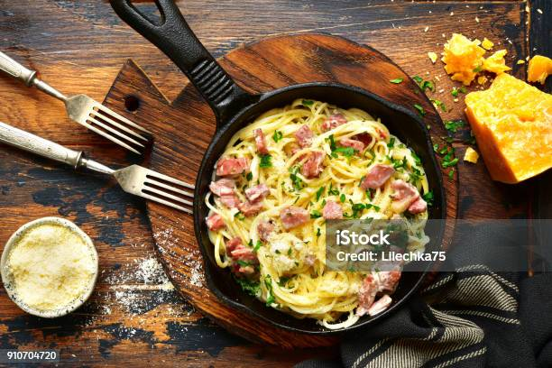

Home
Baconpasta

Description
A spicy and warm meal with protein for the entire family
Ingrendients
- 2 packets of bacon
- 250 gram of Penne Pasta
- 1 Large onion
- 2 Large Red Chilipeppars
- 1 Can of crushed tomatoes
Steps
- Cut the bacon into smaller pieces
- Cut the onion in halves
- Cut the Red Chilipeppars in halves
- Add the onion and red chilipeppars to a food processor
and process until smooth
- Start Boiling the Penne Pasta until desired texture
- In a frying pan, add butter and fry the bacon until they have nice color
- Add the mix of onion and red chilipeppars
- Add the crushed tomatoes and let it all stir for a few minutes
while your penne pasta is getting ready
- Enjoy your spicy weekday treat!